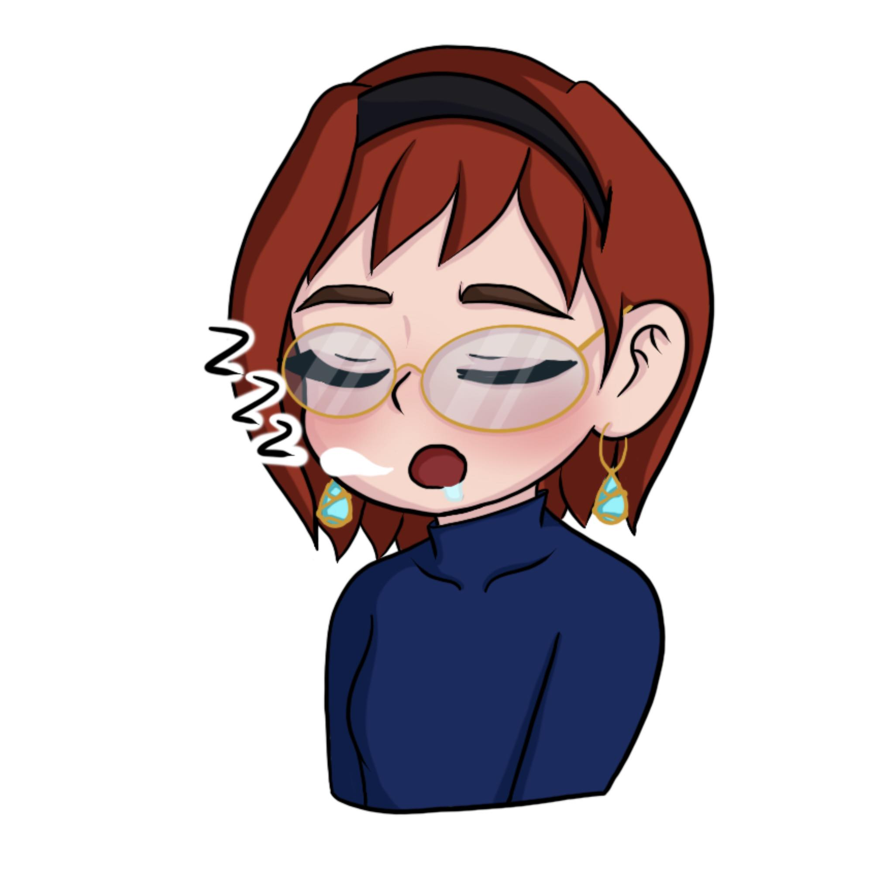

Cześć, jestem Magda. Po wielu latach rozwoju w branży FMCG, której zawiłości zafascynowały mój umysł na progu dorosłości, poczułam, że w końcu nadszedł moment aby rozum ustąpił miejsca sercu, które kocha ludzi. Tak właśnie rozpoczęła się moja przygoda z psychologią, do której zawsze ciągnęło moje serce. Prywatnie swoją pozytywną energię przeznaczam na realizację pasji czyli fotografię, masaż kobido i sport w różnych odsłonach. A gdy poziom energii spada, baterie ładują mi wieczory z przyjaciółmi wypełnione grami towarzyskim i poranne obcowanie z naturą na leśnych szlakach.
Cześć, mam na imię Ola. Na co dzień moim motorem napędowym jest rodzina oraz przyjaciele. Nie mam szczególnych zainteresowań próbuję wszystkiego co mi w duszy zagra. Jednak mam mały grzeszek, jest nim Netflix i muzyka. To jest coś co nie opuszcza mnie ani na moment.
Cześć, nazywam się Iza. Na codzień pracuję jako programistka w dużej firmię IT. Studiuję również dwa kierunki: informatykę i psychologię. Są to moje pasję, z którymi wiążę swoją pszyszłość. Oprócz tego jestem biegaczką długodystanową i startuję w ultramaratonach górskich.
Cześć, nazywam się Justyna i jestem 22-letnią dziewczyną w różnych wcieleniach. Jestem studentką psychologii na AHE, wolontariuszką w Akademii Przyszłości, recepcjonistką na siłowni oraz behawiorystką i trenerką psów. Uwielbiam nowe wyzwania, nie ma dla mnie rzeczy niemożliwych. Jestem osobą, która uwielbia układać i planować, jednocześnie będąc chaotyczną artystką niewyrabiającą ze wszystkim. Czyli w skrócie, jestem po prostu sobą.
Cześć, z tej strony Wika. Z wyglądu nie różnię się niczym od innych kobiet. Z charakteru natomiast… Bliscy mówią mi- dziwaczka! Kocham dzieci i zwierzęta. Jestem bardzo empatyczna i w drugim człowieku widzę przede wszystkim dobro.